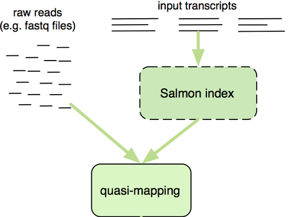
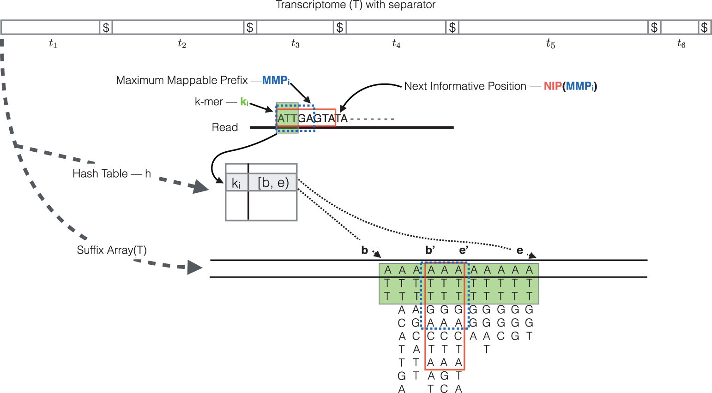

Approximate time: 1.25 hours
Learning Objectives
- Use lightweight algorithms to quantify reads to abundance estimates
- Explain how Salmon performs quasi-mapping and transcript abundance estimation
Lightweight alignment and quantification of gene expression
Now that we have explored the quality of our raw reads, we can move on to quantifying expression at the transcript level. The goal of this step is to identify from which transcript each of the reads originated from and get an estimate of expression associated with each transcript.

Tools that have been found to be most accurate for this step in the analysis are referred to as lightweight alignment tools, which include Kallisto, Sailfish and Salmon; each working slightly different from one another. We will focus on Salmon for this workshop, which is the successor of Sailfish. However, Kallisto is an equally good choice with similar performance metrics for speed and accuracy.
Common to all of these tools is that base-to-base alignment of the reads is avoided, which is the time-consuming step of older splice-aware alignment tools such as STAR and HISAT2. These lightweight alignment tools provide quantification estimates much faster than older tools (typically more than 20 times faster) with improvements in accuracy [1]. These transcript expression estimates, often referred to as ‘pseudocounts’ or ‘abundance estimates’, can be aggregated to the gene level for use with differential gene expression tools like DESeq2 or the estimates can be used directly for isoform-level differential expression using a tool like Sleuth.
Salmon
Salmon uses the reference transcriptome (in FASTA format) and raw sequencing reads (in FASTQ format) as input to perform both mapping and quantification of the reads.
The “quasi-mapping” approach utilized by Salmon requires a transcriptome reference index to determine the position and orientation information for where the fragments best map prior to quantification [2]. The reference index essentially provides the transcriptome in a format that is easily and rapidly searchable. Therefore, it will allow us to quickly find the positions in the transcriptome where each of the reads originated.
NOTE: Since we are searching against only the transcripts (transcriptome), Salmon would not be the appropriate tool to use if trying to detect novel genes or isoforms, intron retention events, or other methods that require a well annotated whole genome instead of only the transcriptome.

Image credit: RNA-Seq Blog
Creating the transcriptome index
This step involves creating an index to evaluate the sequences for all possible unique sequences of length k (k-mer) in the transcriptome, which includes all known transcripts (i.e. splice isoforms) for all genes. The index helps creates a signature for each transcript in our reference transcriptome.
The Salmon index has two components: - a suffix array (SA) of the reference transcriptome - a hash table to map each transcript in the reference transcriptome to it’s location in the SA (is not required, but improves the speed of mapping dramatically)
To create the index, we use the salmon index command as detailed in the code below. However, we are not going to run this code in class as it can take a long time to run and it requires a large amount of memory. Instead, we will have you point to an index that we have generated for you located at /n/groups/hbctraining/rna-seq_2019_02/reference_data/salmon.ensembl38.idx.09-06-2019.
Let’s first load the most up-to-date version of the software (default on Biowulf):
module load salmon
Then, let’s download the reference transcriptome in FASTA format:
We will generate the index from transcript sequences obtained from the Ensembl ftp site with the following commands:
# Download from the FTP server
$ wget ftp://ftp.ensembl.org/pub/release-95/fasta/homo_sapiens/cdna/Homo_sapiens.GRCh38.cdna.all.fa.gz
# Decompress the FASTA file
$ gzip -d Homo_sapiens.GRCh38.cdna.all.fa.gz
Below is the code to run the indexing step, and a description of the parameters:
## DO NOT RUN THIS CODE
$ salmon index \
-t /data/changes/rc_training/rnaseq/references/Homo_sapiens.GRCh38.cdna.all.fa \
# I will create symlink of this for future work
-i salmon_index \
-k 31
-t: the path to the transcriptome file (in FASTA format)-i: the path to the folder to store the indices generated-k: the length of kmer to use to create the indices (will output all sequences in transcriptome of length k)
NOTE: Default kmer size for salmon is -k 31, so we do not need to include the
-kparameter in the index command. However, the kmer default of 31 is optimized for read sizes of 75bp or longer and if your reads are shorter, you will want a smaller kmer (kmer size needs to be an odd number).
OR HAVE STUDENTS RUN INDEXING AS A SBATCH SCRIPT:
#!/bin/bash
#SBATCH --partition=quick
#SBATCH --time=03:00:00 # time limit
#SBATCH --cpus-per-task=6 # number of cores
#SBATCH --mem=6g # requested memory
#SBATCH --job-name salmon_index # Job name
#SBATCH -o %j.out # File to which standard output will be written
#SBATCH -e %j.err # File to which standard error will be written
module load salmon
salmon index \
-t /data/changes/rc_training/rnaseq/references/Homo_sapiens.GRCh38.cdna.all.fa \
-i salmon_index \
-k 31
Exercise:
In your RNA-seq experiment, you expressed a GFP transgene in your mice, and you would like to quantify the expression of GFP. We know that the sequence is not present in the mice transcriptome. What would you do?
- a. Try laboratory techniques like quantitative PCR to act as a proxy for expression level
- b. Add the sequence of the GFP transcript to the FASTA reference file
- c. Manually search for and count the number of times the GFP transcript is present in the read files for each sample
- d. Feel defeated and accept that there is no valid way to do this
Quasi-mapping and quantification
The quasi-mapping approach estimates where the reads best map to on the transcriptome through identifying where informative sequences within the read map instead of performing base-by-base alignment. The quasi-mapping approach is described below, with details provided by the Rapmap tool [3], which provides the underlying algorithm for the quasi-mapping.
-
Step 1: Quasi-mapping

RapMap: a rapid, sensitive and accurate tool for mapping RNA-seq reads to transcriptomes. A. Srivastava, H. Sarkar, N. Gupta, R. Patro. Bioinformatics (2016) 32 (12): i192-i200.
To determine the best mapping for each read/fragment, the quasi-mapping procedure performs the following steps [2]:
-
The read is scanned from left to right until a k-mer that appears in the hash table is discovered.
-
The k-mer is looked up in the hash table and the SA intervals are retrieved, giving all suffixes containing that k-mer
-
The maximal matching prefix (MMP) is identified by finding the longest read sequence that exactly matches the reference suffixes.
-
We could search for the next MMP at the position following the MMP, but often natural variation or a sequencing error in the read is the cause of the mismatch from the reference, so the beginning the search at this position would likely return the same set of transcripts. Therefore, Salmon identifies the next informative position (NIP), by skipping ahead 1 k-mer.
-
This process is repeated until the end of the read.
-
The final mappings are generated by determining the set of transcripts appearing in all MMPs for the read. The transcripts, orientation and transcript location are output for each read.
NOTE: If there are k-mers in the reads that are not in the index, they are not counted. As such, trimming is not required when using this method. Accordingly, if there are reads from transcripts not present in the reference transcriptome, they will not be quantified. Quantification of the reads is only as good as the quality of the reference transcriptome.
-
-
Step 2: Abundance quantification
After determining the best mapping for each read/fragment using the quasi-mapping method, salmon will generate the final transcript abundance estimates after modeling sample-specific parameters and biases. Note that reads/fragments that map equally well to more than one transcript will have the count divided between all of the mappings; thereby not losing information for the various gene isoforms.
Instead of only counting the number of reads/fragments mapping to each of the transcripts, Salmon uses multiple complex modeling approaches, like Expectation Maximization (EM) to estimate the transcript abundances while correcting the abundance estimates for any sample-specific biases/factors [4]. Sample-specific bias models are helpful when needing to account for known biases present in RNA-Seq data including:
- GC bias
- positional coverage biases
- sequence biases at 5’ and 3’ ends of the fragments
- fragment length distribution
- strand-specific methods
If not accounted for, these biases can lead to unacceptable false positive rates in differential expression studies. The Salmon algorithm can learn these sample-specific biases and account for them in the transcript abundance estimates. Generally, this step results in more accurate transcript abundance estimation.
Now we know a little bit about how it works, let’s map our data using Salmon. We can begin by opening up an interactive session and creating a new directory in our results folder for the Salmon output:
#$ srun --pty -p interactive -t 0-3:00 --mem 8G --reservation=HBC2 /bin/bash
$ sinteractive --cpus-per-task=8 --mem=8G
$ mkdir ~/rnaseq/results/salmon
$ cd ~/rnaseq/results/salmon
Salmon is available as a module on Biowulf. To find out more on how to use this module we can use module spider:
$ module spider salmon #note that we are using a different version (1.10 vs. 1.8)
We see that there are no dependency modules and we can simply just load Salmon and get started.
$ module load salmon
To perform the quasi-mapping and transcript abundance quantification, we will use the salmon quant command. The parameters for the command are described below (more information on parameters can be found here):
-i: specify the location of the index directory; RIGHT NOW IT IS/data/changes/rc_training/rnaseq/references/salmon_index-l A: Format string describing the library.Awill automatically infer the most likely library type (more info available here)-r: sample file-o: output quantification file name--useVBOpt: use variational Bayesian EM algorithm rather than the ‘standard EM’ to optimize abundance estimates (more accurate)--seqBiaswill enable it to learn and correct for sequence-specific biases in the input data--validateMappings: developed for finding and scoring the potential mapping loci of a read by performing base-by-base alignment of the reads to the potential loci, scoring the loci, and removing loci falling below a threshold score. This option improves the sensitivity and specificity of the mapping.
To run the quantification step on a single sample we have the command provided below. Let’s try running it on the Mov10_oe_1.subset.fq sample:
$ salmon quant -i /data/changes/rc_training/rnaseq/references/salmon_index \
-l A \
-r /data/NICHD-core0/test/changes/rc_training/rnaseq/raw_data/Mov10_oe_1.subset.fq \
-o Mov10_oe_1.subset.salmon \
--useVBOpt \
--seqBias \
--validateMappings
NOTE: Mapping validation can generally improve both the sensitivity and specificity of mapping, with only a moderate increase in use of computational resources. Unless there is a specific reason to do this (e.g. testing on clean simulated data),
--validateMappingsis generally recommended.Paired-end data: If using paired-end reads, then the command would require both sets of reads to be given:
salmon quant -i transcripts_index -l A -1 reads1.fq -2 reads2.fq -o transcripts_quantRNA-seq bias correction: To have Salmon correct for RNA-Seq biases you will need to specify the appropriate parameters when you run it. As noted, when describing the FASTQC results, with RNA-seq data you will always observe sequence-specific biases due to the random hexamer priming and so we would always want to have that correction turned on. Before using the remaining parameters it is advisable to assess your data using tools like Qualimap to look specifically for the presence of these biases in your data and decide on which parameters would be appropriate.
To correct for the various sample-specific biases you could add the following parameters to the Salmon command:
--gcBiasto learn and correct for fragment-level GC biases in the input data--posBiaswill enable modeling of a position-specific fragment start distribution
Salmon output
You should see a new directory has been created that is named by the string value you provided in the -o command. Take a look at what is contained in this directory:
$ ls -l Mov10_oe_1.subset.salmon/
There is a logs directory, which contains all of the text that was printed to screen as Salmon was running. Additionally, there is a file called quant.sf. This is the quantification file in which each row corresponds to a transcript, listed by Ensembl ID. The columns correspond to metrics for each transcript:
Name Length EffectiveLength TPM NumReads #results at a glance look the same
ENST00000632684.1 12 2.000 0.000000 0.000
ENST00000434970.2 9 1.000 0.000000 0.000
ENST00000448914.1 13 2.000 0.000000 0.000
ENST00000415118.1 8 1.000 0.000000 0.000
ENST00000390583.1 31 2.000 0.000000 0.000
ENST00000390577.1 37 2.000 0.000000 0.000
ENST00000451044.1 17 2.000 0.000000 0.000
....
- The first two columns are self-explanatory, the name of the transcript and the length of the transcript in base pairs (bp).
- The effective length represents the various factors that effect the length of transcript (i.e degradation, technical limitations of the sequencing platform)
- Salmon outputs ‘pseudocounts’ or ‘abundance estimates’ which predict the relative abundance of different isoforms in the form of three possible metrics (FPKM, RPKM, and TPM). TPM (transcripts per million) is a commonly used normalization method as described in [1] and is computed based on the effective length of the transcript. We do NOT recommend FPKM or RPKM.
- Estimated number of reads, which is the estimate of the number of reads drawn from this transcript given the transcript’s relative abundance and length)
NOTE: The effective gene length in a sample is the average of the transcript lengths after weighting for their relative expression. You may see effective lengths that are larger than the physical length. The interpretation would be that in this case, given the sequence composition of these transcripts (including both the sequence-specific and fragment GC biases), you’d expect a priori to sample more reads from them — thus they have a longer estimated effective length.
This file is used as input for downstream analyses including differential gene expression analysis. For each file that you run through Salmon, you will get a correpsonding quant.sf file. Downstream tools like tximport take these files and aggregate them to obtain expression matrices for your dataset.
This lesson has been developed by members of the teaching team at the Harvard Chan Bioinformatics Core (HBC). These are open access materials distributed under the terms of the Creative Commons Attribution license (CC BY 4.0), which permits unrestricted use, distribution, and reproduction in any medium, provided the original author and source are credited.